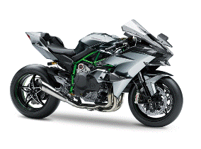
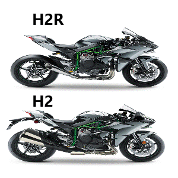

Фото:

Вперше про прототип сучасного гоночного мотоцикла з турбо-нагнітачем заговорили у 2013 році, припустивши, що компанія Kawasaki може серйозно оновити свій Kawasaki ZZ-R1400, встановивши на нього турбований силовий агрегат. Однак Kawasaki пішла іншим шляхом, і вже у вересні 2014 року компанія анонсували нову модель - Kawasaki Ninja H2 (H2R), побудовану на базі літрового двигуна.
Ціна мотоцикла(H2R) - 55000€
Тип двигуна - Рядний Кількість циліндрів - 4 Об'єм двигуна - 998см^3 Інжектор Кількість клапанів на циліндир - 4 Максимальна потужність 228 кВт (310 к.с.)/14.000 об/хв Максимальний крутящий момент - 165 Нм (16,8кгс•м)/12.500 об/хв Максимальна швидкість - 380км/год Система запуску - Електростартер Тип охолодження - Рідинне Передач - 6 Сцеплення - Мокре багатодискове, ручне. Модельний рік - 2021 Тормоза - ABS ABS + KTRC Тип рами - Trellis Об'єм бака - 17л. Довжина - 2070мм. Ширина - 850мм. Висота - 1160мм. Споряджена маса - 216кг.Kawasaki Ninja H2R – гоночна версія, призначена тільки для треку та видає 310 к.с.
Kawasaki Ninja H2 – цивільна версія гоночного H2R, призначена для доріг загального користування та видає 200 к.с.
